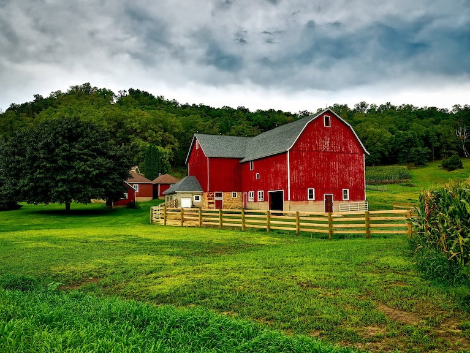

I grew up in the countryside and helped my parents farm the majority of my childhood. Until I moved to the city of Clovis
when I was 14, I made the best memories out in the boonies. We raised chickens, ducks, bunnies, cows, and grew lots of
fruits and vegetables. Such as, cherry tomatoes, squash, bittermelon, radish, chillie peppers, and we had a lemon, orange,
apricot, pistachio, and walnut tree in our backyard. There was more that we had planted but I don't recall.
I do remember waking up early from the roosters call, helping out my parents pick the vegetables until the sun went down.
Learning the hardships of fruits and labor at an early age has taught me the importance of good work ethic.